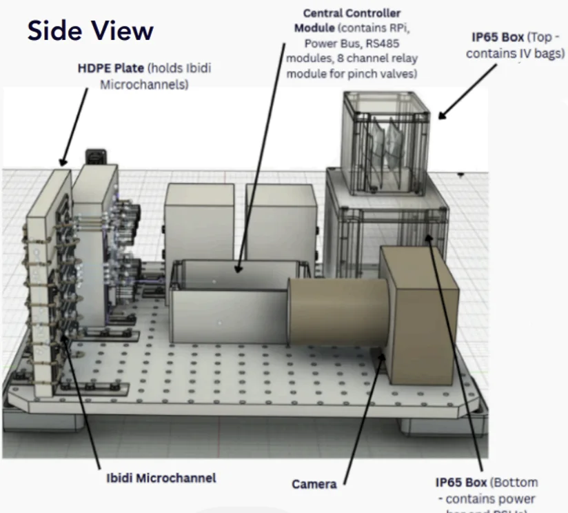
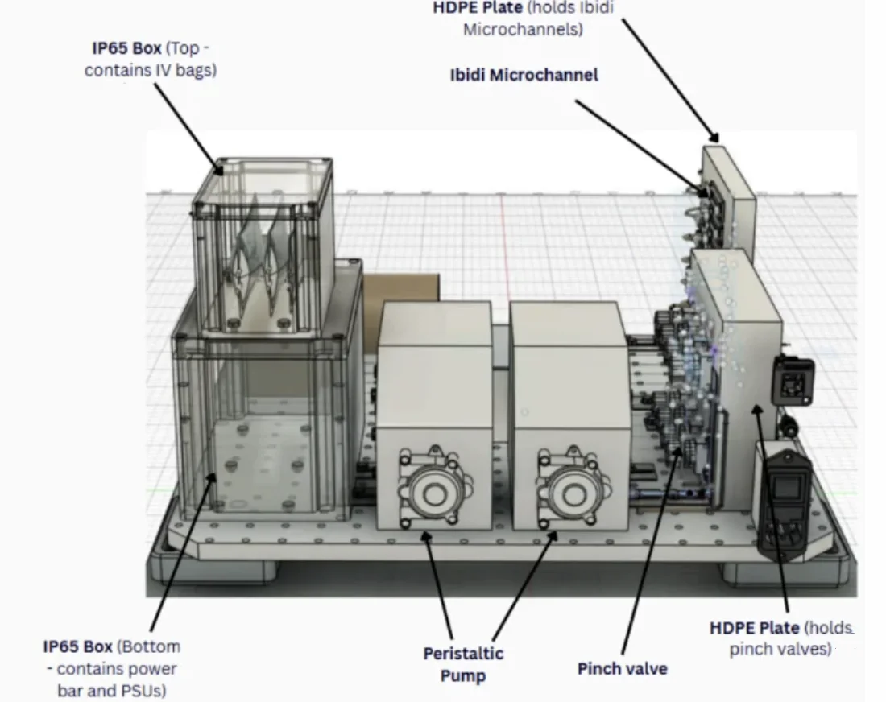
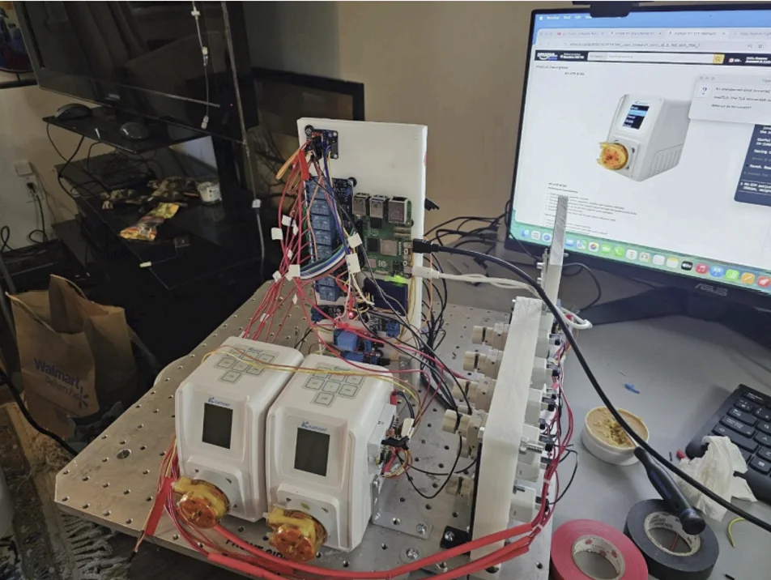
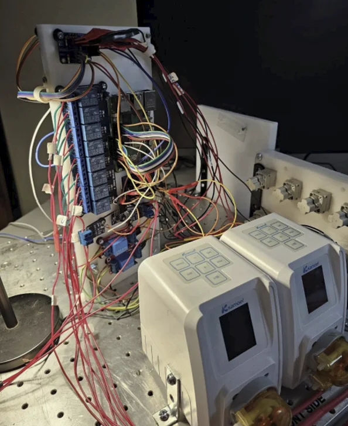
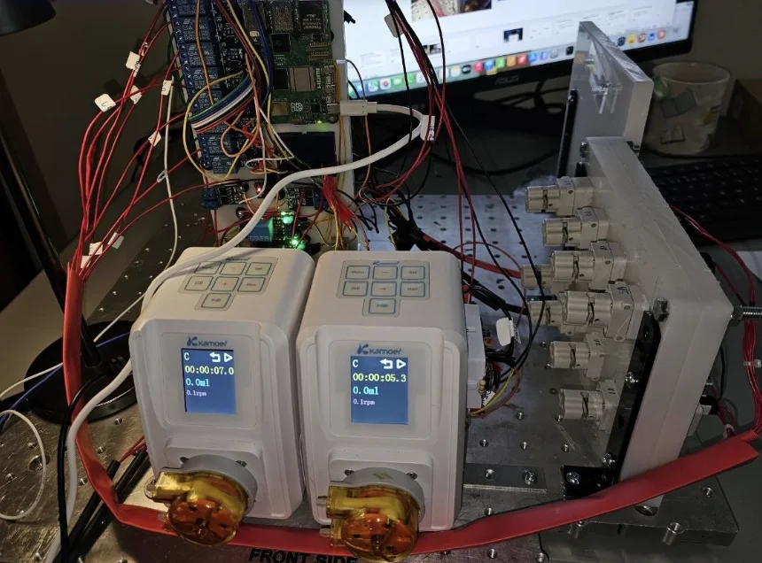
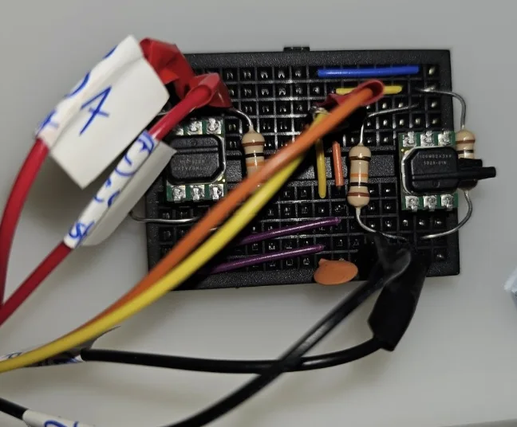

Project images & design — hardware and CAD.






Project images & design — hardware and CAD.
CLOT-LESS investigates how microgravity changes the way the clot-busting drug alteplase dissolves blood clots — a credible medical emergency on long-duration spaceflight. A compact, flight-qualified microfluidic platform measures clot-resistance decay in real time aboard a parabolic flight, working toward evidence-informed autonomous medical care in deep space.
Project-state images — CAN-RGX (CLOT-LESS).
Software in progress.
Accepted IAC 2026 abstract (A1.3.9).
On long-duration missions, injury requiring anesthesia is a foreseeable risk. General anaesthesia is poorly suited to spaceflight, as anesthetic gas can leak into the sealed cabin and the technique depends on intensive physiological monitoring. Spinal anaesthesia is a safer alternative, but only if procedures established on Earth remain reliable in microgravity.
On Earth, the height of a spinal block is controlled by baricity (the relative density of the injected solution to spinal fluid). From this, anesthetists are able to predict and adjust how far the block spreads. We wanted to know whether that predictability survives in microgravity, or whether alternative techniques would be needed. We built an epoxy spinal-canal model to compare the “headward” spread of three injectates of differing baricity (5% dextrose, normal saline, and distilled water) under Earth gravity (1g) and microgravity (0g).
Under 1g, the injectates separated by baricity, as expected. In microgravity that separation was significantly diminished, becoming momentum-limited and largely baricity-independent. Clinically, this convergence could reduce unpredictable excessive spread, but it also limits the ability to tune block height through a drug's baricity.


Experimental setup.
IAC presentation.
ESA/Novespace parabolic flight.
Parabolic flight — onboard footage.
Canadian Space Conference poster.